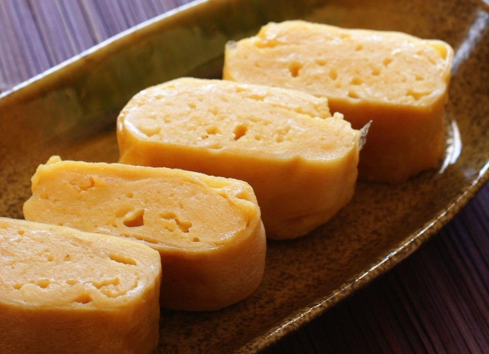
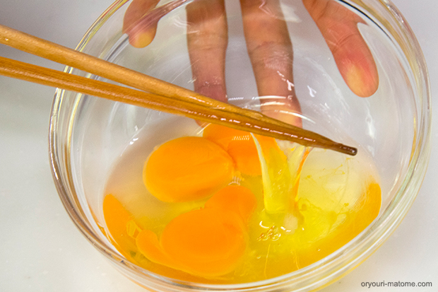
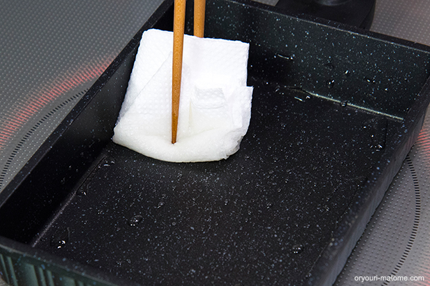
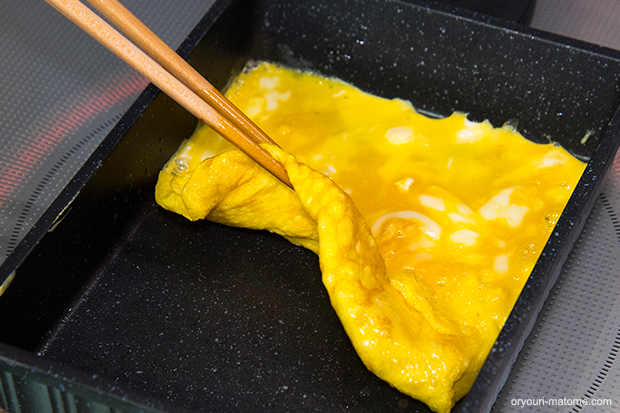
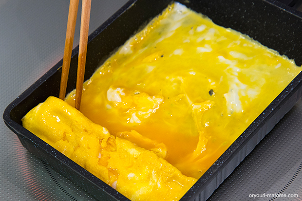
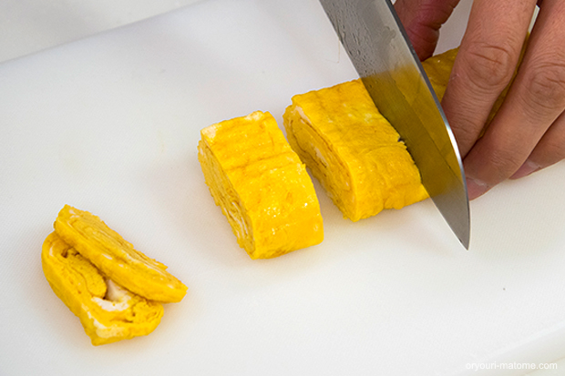

< Tamagoyaki 卵焼き >

< Ingredients 2 Servings>
- ★ 2 Eggs
- ★ 1 Tsp. of Sugar
- ★ 1 Tsp. of Soy Sauce
- ★ 1 Tbsp. of Water
< Directioins >
- Mix all of the ★ ingredients into a bowl.

- Pour 1 Tbsp. of oil into a flying pan.

- Pour in 1/3 of the mixed ★ ingredients into the pan. When the egg started to cook, roll up the egg.

- Pour the rest of the mixed ★ ingredients into the flying pan.

- Roll up the egg again, and Ready to serve!

< Tips >
- By using a squared flying pan will be easier, but regular small size flying pan will work just fine!
- By pouring small amount of mixed ★ ingredients everytime, it will make the roll more prettier!